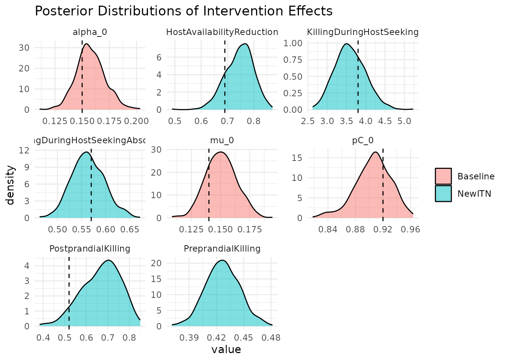
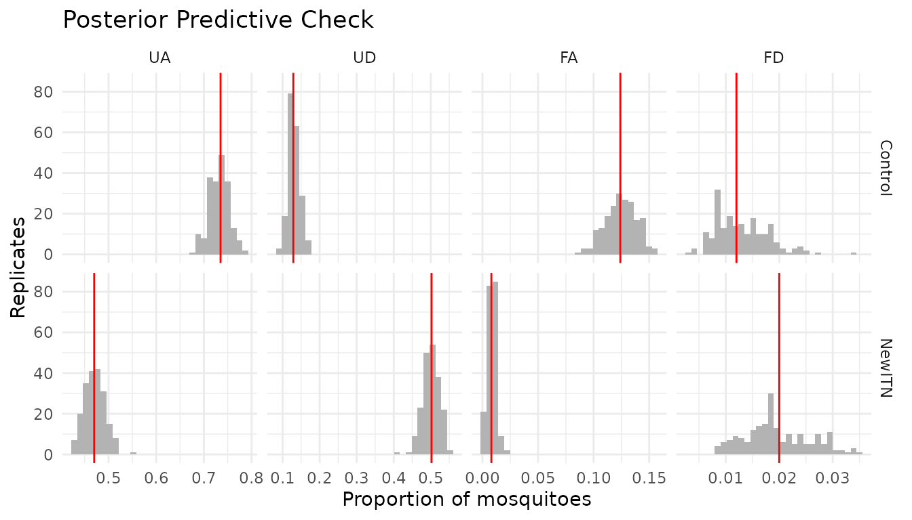
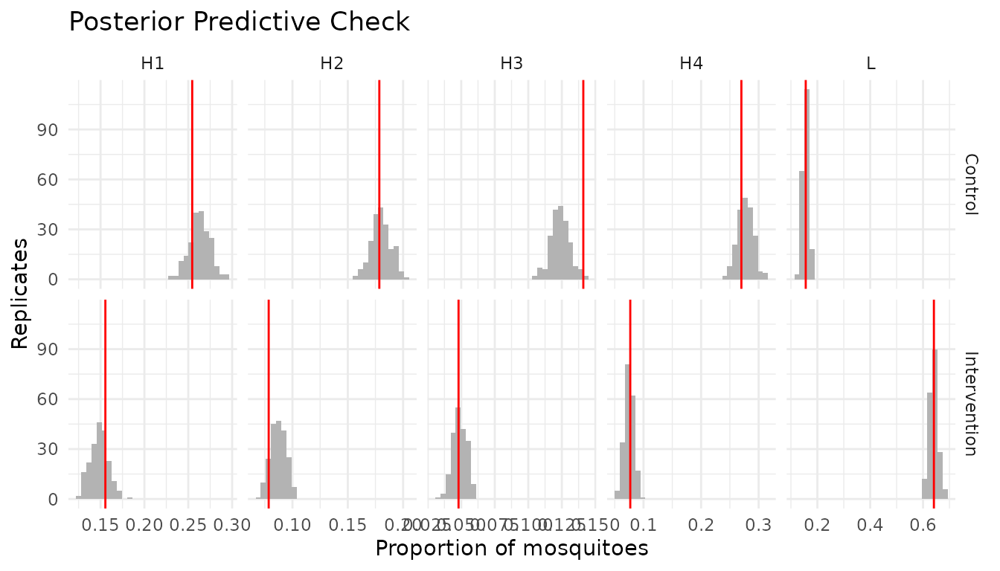

Workflow: Using Predefined Models
workflow-predefined-models.RmdThis vignette demonstrates the complete workflow for analyzing
entomological trials data using Bayesian models in the
AnophelesEntoTrials package.
Overview
The package provides two predefined Stan models for different experimental designs:
| Model | model_type |
Experimental design | Reference |
|---|---|---|---|
| Basic model | "basic" |
Experimental hut trials (EHT) | Champagne et al. (2025) |
| Semifield model | "semifield" |
Matched semifield experiments with a spatial repellent | Denz et al. (2021) |
The workflow is first shown with the basic model; the semifield model is used in the same way (see Fitting the Semifield Model).
Model Descriptions
Both published models are based on a Markov chain model of the mosquito feeding cycle (Chitnis et al. 2008): during the experiment, a host-seeking mosquito either finds a host (rate ) or dies (rate ).
Basic Model
For each arm (control or intervention), the probabilities of the four outcomes observed at the end of the night are:
where is the probability of surviving after feeding (the product of Chitnis et al. 2008, not , the probability of biting). The intervention modifies the control rates as follows:
- Reduction in host availability:
- Pre-prandial killing:
- Post-prandial killing:
The counts of each observation (hut-night) follow a multinomial distribution with these probabilities.
| Parameter | Symbol | Interpretation | Range |
|---|---|---|---|
| HostAvailabilityReduction | π | Reduction in host availability | 0-1 |
| KillingDuringHostSeeking | κ | Pre-prandial killing, relative to the attack rate | ≥0 |
| KillingDuringHostSeekingAbsolute | Derived: pre-prandial killing as an absolute additional mortality rate | ≥0 | |
| PostprandialKilling | ξ | Post-prandial killing | 0-1 |
| PreprandialKilling | - | Derived: pre-prandial killing efficacy as defined in Champagne et al. (2025) | 0-1 |
Earlier versions of the package named these parameters
InitialRepellencyRate,
InitialPostprandialkillingEfficacy and
InitialPreprandialkillingEfficacy.
Baseline parameters: - alpha_0: Baseline attack rate
(exp(a) in Stan) - mu_0: Baseline mortality rate (exp(m) in
Stan) - pC_0: Baseline probability of surviving
blood-feeding (inv_logit(b) in Stan)
Semifield Model
In the semifield experiments of Denz et al. (2021), control and intervention arms are run on matched nights, and mosquitoes are collected by human landing catch (HLC) every hour. The outcomes of each night are the landings in hours 1, 2, 3 and 4-12 (), the trap catch (, absent for a repellent alone) and the mosquitoes lost to follow-up (). Hourly landings make it possible to separate the reduction in host availability from the killing effect.
The probability of still searching after hours, and of landing on the host within hours, are:
The outcome probabilities are:
The rates vary between nights :
The spatial repellent modifies them as in the basic model:
- Reduction in host availability:
- Pre-prandial killing:
The outputs HostAvailabilityReduction and
KillingDuringHostSeeking are
and
,
and alpha_H0, mu0 are the mean control
rates.
Step 1: Load the Package
library(AnophelesEntoTrials)
# See available models, including the data each model requires
knitr::kable(list_available_models(details = TRUE))| model | file | description | required_data | use_case |
|---|---|---|---|---|
| basic | eht_basic.stan | Standard multinomial EHT model | UA, UD, FA, FD, treatment | Standard experimental hut trial data with 4 outcome categories |
| semifield | semifield_repellent.stan | Matched semifield model for a spatial repellent (Denz et al. 2021) | y0, y1 | Semifield experiments with time-to-event outcomes (H1-H4, T, L) |
Step 2: Prepare Your Data
Basic Model Data Format
The basic model requires: - UA: Unfed Alive count -
UD: Unfed Dead count - FA: Fed Alive count -
FD: Fed Dead count - treatment: Treatment
indicator (0 = control, 1+ = treatments)
# Example: Import data from CSV with standard column names
eht_data <- import_ento_data("path/to/your/data.csv")
eht_data <- format_eht_data(eht_data)
# Or, if your file uses other column names:
# - list the endpoint columns in required_vars,
# - give the treatment column in treatment_var (renamed to "treatment"),
# - give the product names column in product_var (renamed to
# "vector_control_product", used to label the results),
# - map the endpoint columns to UA, UD, FA, FD in format_eht_data()
# If the treatment column holds product names and there is no product
# column, format_eht_data() keeps those names in vector_control_product
# before encoding treatment as 0 (control), 1, 2, ...
eht_data_custom <- import_ento_data("path/to/your/data.csv",
required_vars = c("alive", "dead", "alivefed", "deadfed"),
treatment_var = "Intervention",
product_var = "Net_Name")
eht_data_custom <- format_eht_data(eht_data_custom,
mapping = list(UA = "alive", UD = "dead",
FA = "alivefed", FD = "deadfed"),
control_value = "control")Simulated Example Dataset
For the purpose of this vignette, we simulate a synthetic dataset from the basic model with known parameter values, on which we then refit the model. Since the true values are known, we can check that the model recovers them (see Step 4).
# True parameter values used for the simulation
true_baseline <- c(
alpha_0 = 0.15, # baseline attack rate
mu_0 = 0.14, # baseline mortality rate
pC_0 = 0.92 # baseline survival probability after blood-feeding
)
true_effects <- data.frame(
vector_control_product = "NewITN",
HostAvailabilityReduction = 0.69, # reduction in host availability
KillingDuringHostSeeking = 3.8, # pre-prandial killing multiplier
PostprandialKilling = 0.52 # post-prandial killing
) # add rows to simulate several treatment arms
# Simulate 100 hut-nights per arm with 10 mosquitoes each (see ?simulate_eht_data)
n_obs <- 100
n_mosquitoes <- 10
simulated_data <- simulate_eht_data(
n_obs = n_obs,
n_mosquitoes = n_mosquitoes,
alpha_0 = true_baseline[["alpha_0"]],
mu_0 = true_baseline[["mu_0"]],
pC_0 = true_baseline[["pC_0"]],
treatments = true_effects,
seed = 42
)
# Format the data (adds derived columns)
eht_data <- format_eht_data(simulated_data)
head(eht_data)
#> # A tibble: 6 × 9
#> UA UD FA FD treatment vector_control_product fed dead total
#> <dbl> <dbl> <dbl> <dbl> <int> <chr> <dbl> <dbl> <dbl>
#> 1 6 3 1 0 0 Control 1 3 10
#> 2 6 2 2 0 0 Control 2 2 10
#> 3 7 0 3 0 0 Control 3 0 10
#> 4 7 1 2 0 0 Control 2 1 10
#> 5 5 2 3 0 0 Control 3 2 10
#> 6 5 5 0 0 0 Control 0 5 10Step 3: Fit the Model
# Fewer iterations than the defaults, to keep this vignette quick to build
fit_basic <- fit_ento_model(
data = eht_data,
model_type = "basic",
iter = 2000,
warmup = 1000,
chains = 2,
seed = 123,
save_y_rep = TRUE, # keep replicated data for the posterior predictive check
refresh = 0 # passed to rstan: hide sampling progress
)
#> ℹ Using predefined model: basic
#> ℹ Fitting Stan model...
#> ℹ Iterations: 2000 | Warmup: 1000 | Chains: 2
#> ✔ Model fitting completeSave and Load Results
# Save during fitting
fit <- fit_ento_model(
data = eht_data,
model_type = "basic",
output_path = "results/my_fit.rds"
)
# Or save manually
saveRDS(fit_basic, "results/fit_basic.rds")
# Load later
fit_loaded <- readRDS("results/fit_basic.rds")Step 4: Extract and Interpret Results
Summary Statistics
# Extract posterior summaries with 95% credible intervals
summary_results <- extract_stan_summary(
fit_basic,
data = eht_data,
probs = c(0.025, 0.975)
)
print(summary_results)
#> # A tibble: 8 × 6
#> param treatment mean lower upper vector_control_product
#> <chr> <dbl> <dbl> <dbl> <dbl> <chr>
#> 1 PostprandialKilling 1 0.671 0.481 0.835 NewITN
#> 2 KillingDuringHostSeeking 1 3.60 2.91 4.35 NewITN
#> 3 KillingDuringHostSeekingAb… 1 0.564 0.499 0.633 NewITN
#> 4 HostAvailabilityReduction 1 0.745 0.632 0.838 NewITN
#> 5 PreprandialKilling 1 0.427 0.391 0.465 NewITN
#> 6 alpha_0 NA 0.158 0.134 0.187 NA
#> 7 mu_0 NA 0.15 0.125 0.176 NA
#> 8 pC_0 NA 0.905 0.848 0.95 NASince the data were simulated, we can compare the estimates with the true values:
true_values <- data.frame(
param = c(names(true_effects)[-1], names(true_baseline),
"KillingDuringHostSeekingAbsolute"),
true = unname(c(unlist(true_effects[1, -1]), true_baseline,
true_effects$KillingDuringHostSeeking[1] * true_baseline[["alpha_0"]]))
)
merge(summary_results[, c("param", "mean", "lower", "upper")], true_values)
#> param mean lower upper true
#> 1 alpha_0 0.158 0.134 0.187 0.15
#> 2 HostAvailabilityReduction 0.745 0.632 0.838 0.69
#> 3 KillingDuringHostSeeking 3.602 2.906 4.353 3.80
#> 4 KillingDuringHostSeekingAbsolute 0.564 0.499 0.633 0.57
#> 5 mu_0 0.150 0.125 0.176 0.14
#> 6 pC_0 0.905 0.848 0.950 0.92
#> 7 PostprandialKilling 0.671 0.481 0.835 0.52posteriorMax Estimates
# Get posteriorMax estimates (single best estimate)
posteriorMax <- extract_posteriorMax(fit_basic, data = eht_data)
print(posteriorMax)
#> # A tibble: 8 × 5
#> sample param treatment value vector_control_product
#> <int> <chr> <dbl> <dbl> <chr>
#> 1 1613 PostprandialKilling 1 0.644 NewITN
#> 2 1613 KillingDuringHostSeeking 1 3.42 NewITN
#> 3 1613 KillingDuringHostSeekingAbsolute 1 0.553 NewITN
#> 4 1613 HostAvailabilityReduction 1 0.742 NewITN
#> 5 1613 PreprandialKilling 1 0.421 NewITN
#> 6 1613 alpha_0 NA 0.162 NA
#> 7 1613 mu_0 NA 0.153 NA
#> 8 1613 pC_0 NA 0.888 NAFull Posterior Samples
# Extract subset of posterior samples for further analysis
posterior_samples <- extract_stan_posteriors(
fit_basic,
data = eht_data,
n_samples = 500 # Random subset of 500 samples
)
# Visualize posterior distribution, with the true values as dashed lines
library(ggplot2)
# Baseline parameters have no product, so they are labelled "Baseline"
posterior_samples$product <- ifelse(is.na(posterior_samples$vector_control_product),
"Baseline", posterior_samples$vector_control_product)
ggplot(posterior_samples, aes(x = value)) +
geom_density(aes(fill = product), alpha = 0.5) +
geom_vline(data = true_values, aes(xintercept = true), linetype = "dashed") +
facet_wrap(~ param, scales = "free") +
theme_minimal() +
labs(title = "Posterior Distributions of Intervention Effects", fill = NULL)
Posterior Predictive Check
To check that the fitted model reproduces the data, we compare the
observed outcome proportions (red lines) with those of datasets
replicated from posterior draws. This requires fitting with
save_y_rep = TRUE.
set.seed(1)
ppc <- posterior_predictive_check(fit_basic, data = eht_data, n_draws = 200)
ppc$summary
#> # A tibble: 8 × 8
#> treatment outcome observed median lower upper p_value vector_control_product
#> <int> <fct> <dbl> <dbl> <dbl> <dbl> <dbl> <chr>
#> 1 0 UA 0.735 0.732 0.690 0.777 0.44 Control
#> 2 1 UA 0.47 0.471 0.433 0.514 0.51 NewITN
#> 3 0 UD 0.129 0.129 0.102 0.163 0.52 Control
#> 4 1 UD 0.502 0.502 0.458 0.542 0.505 NewITN
#> 5 0 FA 0.124 0.125 0.0970 0.151 0.55 Control
#> 6 1 FA 0.008 0.008 0.002 0.016 0.605 NewITN
#> 7 0 FD 0.012 0.012 0.006 0.024 0.565 Control
#> 8 1 FD 0.02 0.019 0.01 0.0320 0.445 NewITN
plot_posterior_predictive(ppc)
Fitting the Semifield Model
The semifield model follows the same workflow, with
model_type = "semifield" and the data listed in Step 1. As
for the basic model, we simulate a dataset similar to the repellent
experiment of Denz et al. (2021), with the effects estimated in that
article, and refit the model.
set.seed(1)
n_nights <- 20 # matched nights
released <- 100 # mosquitoes released per arm and night
true_semifield <- c(HostAvailabilityReduction = 0.416, KillingDuringHostSeeking = 0.911)
# Night-specific control rates (per hour), with night-to-night variation
alpha <- exp(log(0.3) + rnorm(n_nights, 0, 0.3))
mu <- exp(log(0.05) + rnorm(n_nights, 0, 0.3))
# Outcome probabilities H1, H2, H3, H4, L (no trap)
semifield_probs <- function(alpha, mu) {
PA <- function(t) exp(-(alpha + mu) * t)
PH <- function(t) (1 - PA(t)) * alpha / (alpha + mu)
p <- c(PH(1), PA(1) * PH(1), PA(1)^2 * PH(1), PA(1)^3 * PH(9))
c(p, 1 - sum(p))
}
# Outcome matrices of matched nights (one row per night, same order in both arms);
# without a trap, the T column can be left out
semifield_data <- list(
y0 = t(sapply(1:n_nights, function(k)
rmultinom(1, released, semifield_probs(alpha[k], mu[k])))),
y1 = t(sapply(1:n_nights, function(k)
rmultinom(1, released, semifield_probs((1 - true_semifield[[1]]) * alpha[k],
mu[k] + true_semifield[[2]] * alpha[k]))))
# if the compartments contained a trap, add its availability per night:
# beta0 = ..., beta1 = ...
)
fit_semifield <- fit_ento_model(
data = semifield_data,
model_type = "semifield",
iter = 2000,
warmup = 1000,
chains = 2,
seed = 123,
save_y_rep = TRUE,
refresh = 0
)
#> ℹ Using predefined model: semifield
#> ℹ Fitting Stan model...
#> ℹ Iterations: 2000 | Warmup: 1000 | Chains: 2
#> ✔ Model fitting complete
# Estimates and true values
extract_stan_summary(fit_semifield)
#> # A tibble: 2 × 5
#> param treatment mean lower upper
#> <chr> <dbl> <dbl> <dbl> <dbl>
#> 1 KillingDuringHostSeeking NA 0.934 0.815 1.06
#> 2 HostAvailabilityReduction NA 0.383 0.305 0.454
true_semifield
#> HostAvailabilityReduction KillingDuringHostSeeking
#> 0.416 0.911
# Posterior predictive check
ppc_semifield <- posterior_predictive_check(fit_semifield, data = semifield_data)
plot_posterior_predictive(ppc_semifield)
Troubleshooting and Initialization
Divergent Transitions
If you see warnings about divergent transitions:
# Increase adapt_delta
fit <- fit_ento_model(
data = eht_data,
model_type = "basic",
control = list(adapt_delta = 0.99, max_treedepth = 15)
)Slow Convergence
If Rhat values are > 1.1:
# Increase iterations and chains
fit <- fit_ento_model(
data = eht_data,
model_type = "basic",
iter = 20000,
warmup = 10000,
chains = 4
)Understanding Parameter Initialization
MCMC sampling requires starting values (initial values) for all parameters. The package provides automatic initialization, but understanding how it works helps with troubleshooting and customization.
How Initialization Works
When you call fit_ento_model() with
init = "auto" (the default), the package:
-
Creates an init function using
generate_inits_basic()orgenerate_inits_semifield()depending on your model type - Stan calls this function once per chain to get different starting points
- Each chain starts from a different random location in parameter space
# See what the init function produces
library(AnophelesEntoTrials)
# Create init function for 2 treatment groups (control + 1 intervention)
init_fn <- generate_inits_basic(nb_treat = 2)
# Call it to see one set of initial values
init_fn()Why Multiple Chains with Different Inits?
Different chains starting from different points should converge to the same posterior distribution if: - The model is well-specified - There’s enough data - The sampler has run long enough
If chains don’t converge (Rhat > 1.1), it may indicate: - Insufficient iterations - Model identifiability issues - Need for better initialization
Customizing Initialization
You can provide your own init function for more control:
# Custom init function with specific starting values
my_inits <- function() {
list(
PostprandialKilling = c(0.1, 0.5), # control, treatment
KillingDuringHostSeeking = c(0.1, 0.5),
HostAvailabilityReduction = c(0.1, 0.5),
a = -2, # log(alpha_0) ≈ log(0.14) = -2
m = -2, # log(mu_0) ≈ log(0.14) = -2
b = 2 # logit(pC_0) ≈ logit(0.88) = 2
)
}
# Use custom inits
fit <- fit_ento_model(
data = eht_data,
model_type = "basic",
init = my_inits
)Parameter Scales in Stan
The Stan models use transformed scales for baseline parameters:
| R Parameter | Stan Parameter | Transformation | Typical Range |
|---|---|---|---|
alpha_0 |
a |
alpha_0 = exp(a) |
a ∈ (-4, 0) |
mu_0 |
m |
mu_0 = exp(m) |
m ∈ (-4, 0) |
pC_0 |
b |
pC_0 = inv_logit(b) |
b ∈ (-2, 4) |
When providing custom inits, specify values on the transformed scale (a, m, b) not the natural scale.
Assumptions and Limitations
- Huts and hut entry are not modelled: is a reduction in host availability, not a reduction in hut entry.
- Pre-prandial killing uses the scaled definition
;
the absolute additional mortality is
(output
KillingDuringHostSeekingAbsoluteof the basic model). There is currently no evidence base to choose between the two definitions, and the choice affects predictions. - The baseline rates (, ) are estimated under experimental conditions and need not reflect field conditions.
- The basic model does not include disarming (mosquitoes prevented from feeding without being killed).
- In the semifield model, combines killing and disarming, which can only be separated with additional experiments. Post-prandial killing is not estimated: it requires a separate experiment on the mortality of mosquitoes caught by HLC.
- The semifield model assumes the experimental schedule of Denz et al. (2021): HLC in hours 1, 2, 3 and 4-12 of a 12-hour night.
References
- Champagne C, Lemant J, et al. (2025). Cascades of effectiveness of next-generation insecticide-treated nets against malaria, from entomological trials to real-life conditions. Nature Communications 16:11162. https://doi.org/10.1038/s41467-025-66130-y
- Chitnis N, Smith T, Steketee R (2008). A mathematical model for the dynamics of malaria in mosquitoes feeding on a heterogeneous host population. Journal of Biological Dynamics 2(3):259-285. https://doi.org/10.1080/17513750701769857
- Denz A, Njoroge MM, et al. (2021). Predicting the impact of outdoor vector control interventions on malaria transmission intensity from semi-field studies. Parasites & Vectors 14:64. https://doi.org/10.1186/s13071-020-04560-x
Next Steps
- See
vignette("workflow-custom-models")for using custom Stan models - See
?extract_stan_summaryfor more extraction options - See
?list_available_modelsfor model details